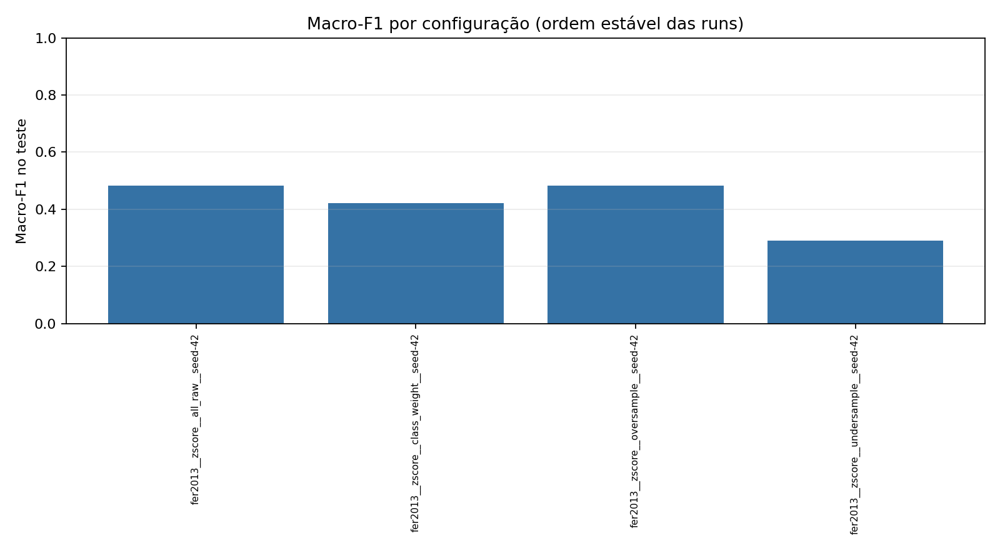

Runs: 4 · Status: {'completed': 4}

| Run | Status | Normalização | Balanceamento | No-op | Seed | Accuracy | Balanced accuracy | Macro-F1 | Detalhes |
|---|---|---|---|---|---|---|---|---|---|
| fer2013__zscore__all_raw__seed-42 | completed | zscore | all_raw | True | 42 | 0.5274990709773318 | 0.47305003755868136 | 0.4824961444140708 | relatório |
| fer2013__zscore__class_weight__seed-42 | completed | zscore | class_weight | False | 42 | 0.4485321441843181 | 0.4673304287111176 | 0.42125561113609805 | relatório |
| fer2013__zscore__oversample__seed-42 | completed | zscore | oversample | False | 42 | 0.494611668524712 | 0.5084772373891704 | 0.4827824507453404 | relatório |
| fer2013__zscore__undersample__seed-42 | completed | zscore | undersample | False | 42 | 0.31512448903753254 | 0.35163179666956157 | 0.2896573834103441 | relatório |